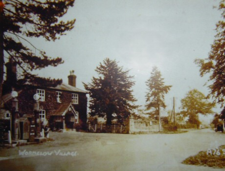

 Possible location of Wormelow Tump (behind fence and wall next to building), 1920s to 1930s. To see an equivalent October 2005 shot put your mouse over the image (if you don't have Javascript, you can see the photos here and here).